Apartman Balun
Balun
Prirodni amfiteatar ravnih kamenih ploča na sjevernoj strani rta Glavice, desetak minuta šetnje od restorana Soline.
Kuća tipične mediteranske arhitekture u centru Vrboske, oko 300 m od mora i plaže. Svaki apartman nosi ime jedne od plaža u okolici, a do svih se lako stigne pješice, biciklom, autom ili brodom.
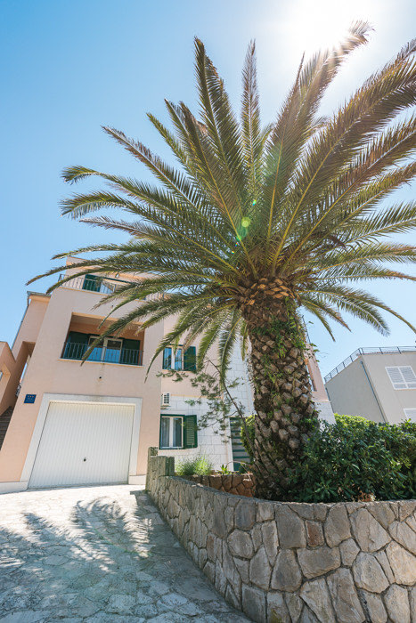
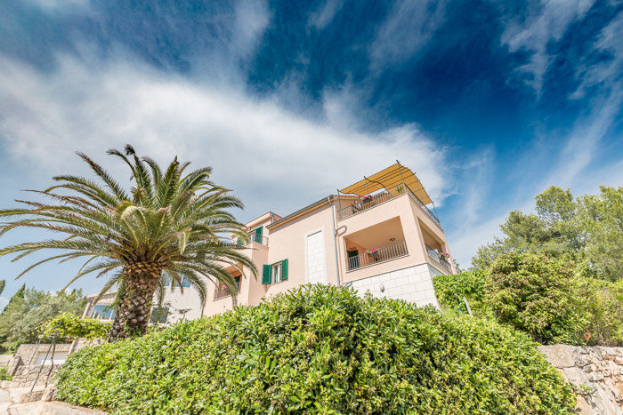

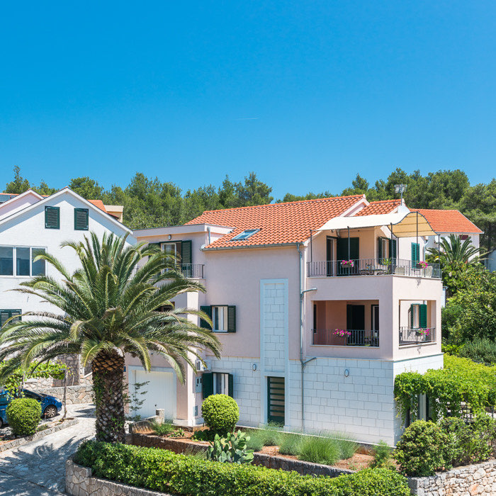

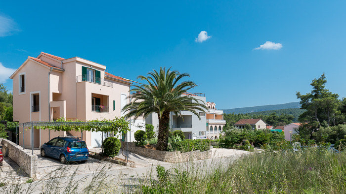
Apartmani Šerić nalaze se u centru Vrboske, najmanjeg mjesta na otoku Hvaru. Svi su potpuno opremljeni, s klima uređajem, Wi-Fi internetom i satelitskom TV, ukusno uređeni i s lijepim pogledom na okolnu prirodu.
Ispred kuće je ljetna terasa s kaminom i velika okućnica. Parkirno mjesto osigurano je za sve goste, a za vlasnike plovila i vez u luci.
Balun, Maslinica, Rapa, Vela Gomila i Zavala nose imena najljepših plaža u okolici Vrboske.
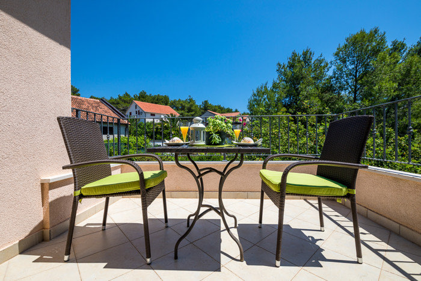
Potkrovlje s privatnom terasom, okrenuto istoku.
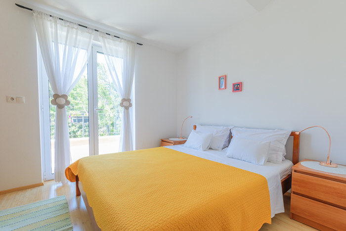
Dvosobni apartman s balkonima i pogledom prema jugozapadu.
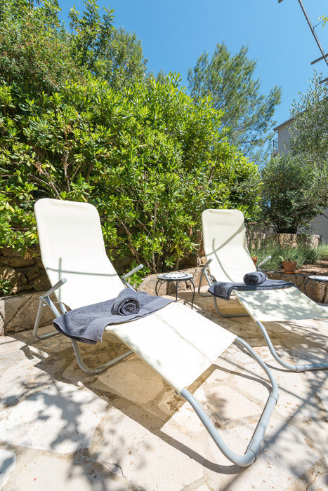
Prizemlje na istočnoj strani, s vlastitim dvorištem u vrtu.
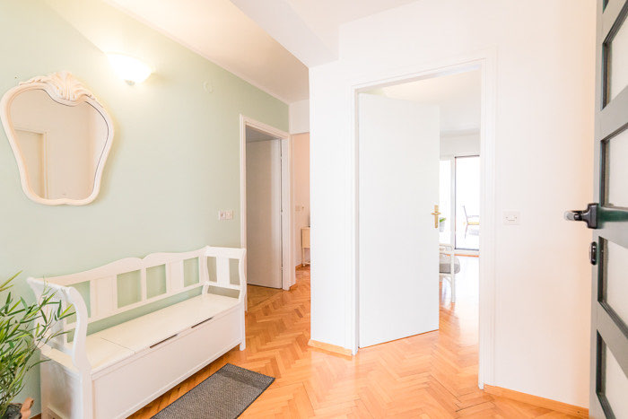
Najveći apartman: dvije spavaće sobe i dva balkona.
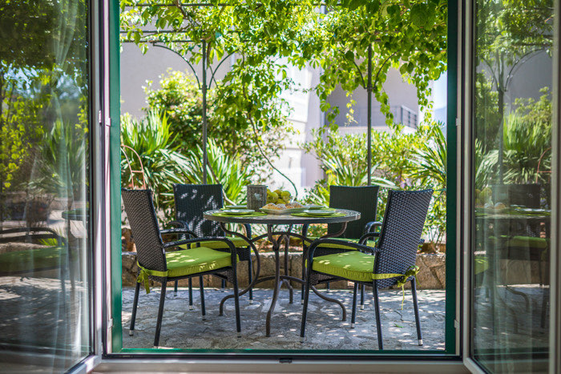
Prizemlje na zapadnoj strani, s vlastitim dvorištem u vrtu.
U prizemlju ispred apartmana je široka terasa s vrtom, zidanim roštiljem i parkirnim mjestom. Za goste koji dolaze brodom može se osigurati vez u obližnjoj luci.
Ljetna terasa i zidani roštilj u vrtu.
Parkirno mjesto za sve goste.
Za vlasnike plovila, u obližnjoj luci.
U svim apartmanima.
U svim apartmanima.
U apartmanima Balun, Rapa i Zavala.
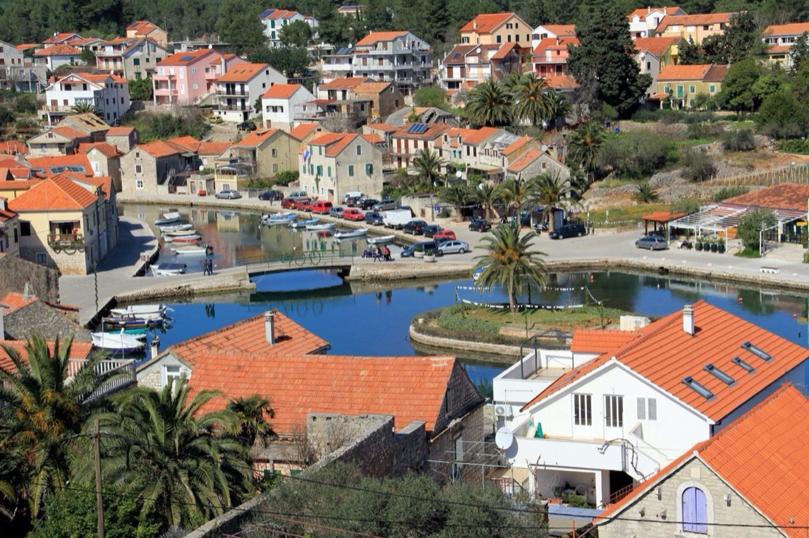
Vrboska leži uz uski, vijugavi fjord. Osnovana je u 15. stoljeću, a zbog brojnih malih mostova često je zovu Mala Venecija.
Upoznajte VrboskuDo plaža po kojima su apartmani dobili ime lako se stigne šetnjom, biciklom, autom ili brodom.
Prirodni amfiteatar ravnih kamenih ploča na sjevernoj strani rta Glavice, desetak minuta šetnje od restorana Soline.
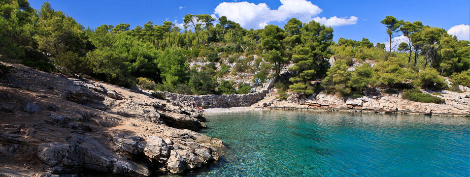
Šljunčana uvala u borovoj šumi, zaklonjena od sjeverozapadnjaka, s izvorima pitke vode. Oko 15 minuta hoda.

Niz malih skrivenih plaža između Maslinice i Zavale, za one koji traže mir.

Ravne kamene ploče i malo žalo s pogledom na Brač. Desetak minuta biciklom ili dvije minute autom.
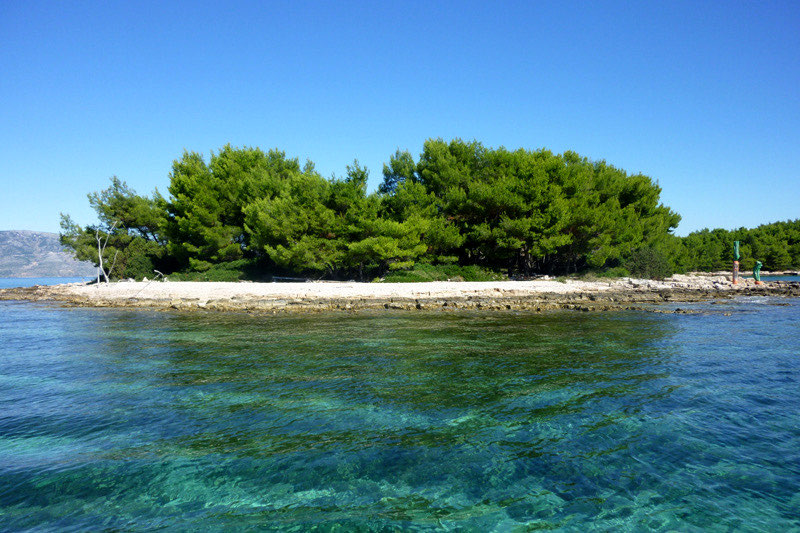
Rt i hrid s plitkim morem oko sebe, omiljeni ronilački kutak. U blizini je ronilački centar.
Niste našli odgovor? Nazovite ili pišite na WhatsApp i Viber: +385 91 509 06 09.
Kuća je u centru Vrboske, oko 300 m od mora i plaže. Trgovina je na 150 m, a restorani, luka i autobusna stanica na oko 100 m.
Da. Parkirno mjesto osigurano je za sve goste.
Vlasnicima plovila možemo osigurati vez u obližnjoj luci u Vrboskoj.
Balun, Rapa i Zavala imaju 2+2 ležaja. Vela Gomila i Maslinica dvosobni su apartmani s 2+2+2 ležaja.
Svi apartmani imaju klima uređaj, Wi-Fi i satelitsku TV, kuhinju, kupaonicu i dnevni boravak. Balun, Rapa i Zavala imaju i centralno grijanje. U vrtu je ljetna terasa s kaminom i roštiljem.
Cijene nisu objavljene na stranici, pa nam pošaljite upit s datumima i brojem gostiju: obrascem na ovoj stranici, e-mailom ili telefonom, WhatsAppom i Viberom na +385 91 509 06 09.
Ispunite obrazac i otvorit će se pripremljena e-poruka za Apartmane Šerić. Provjerite podatke i pošaljite je iz svog programa za e-poštu.